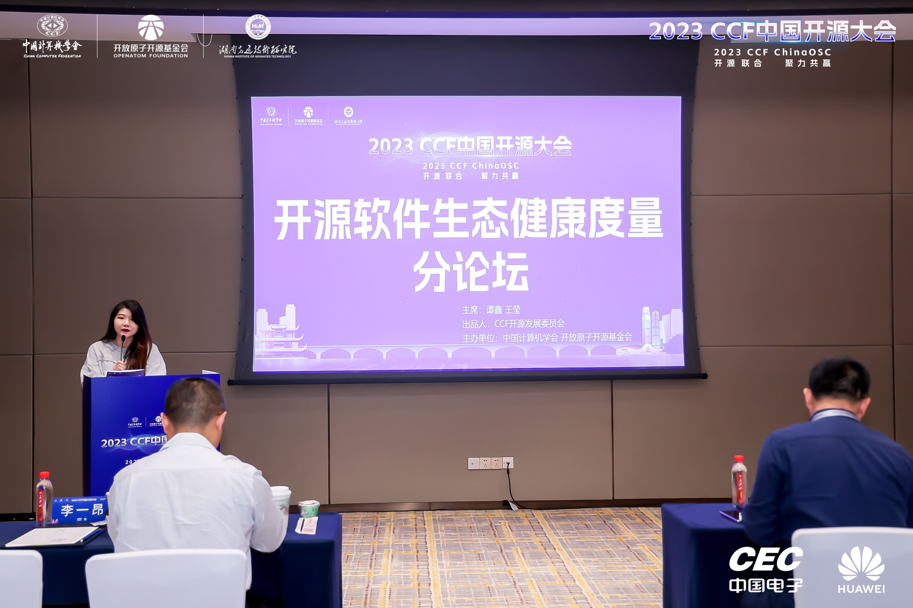
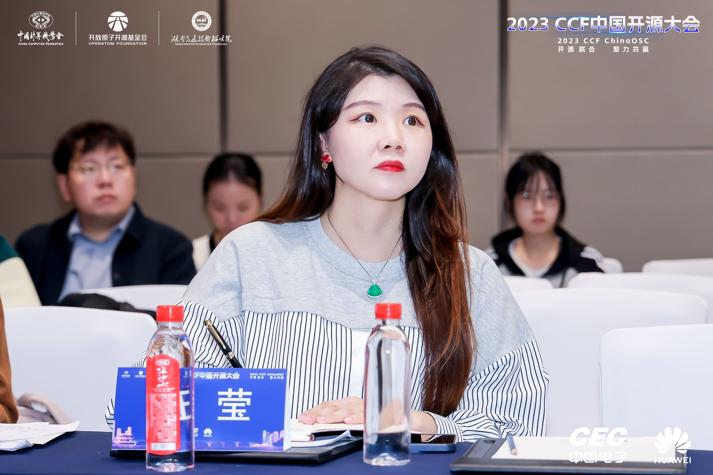
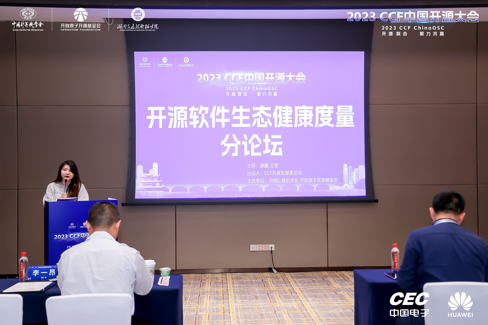
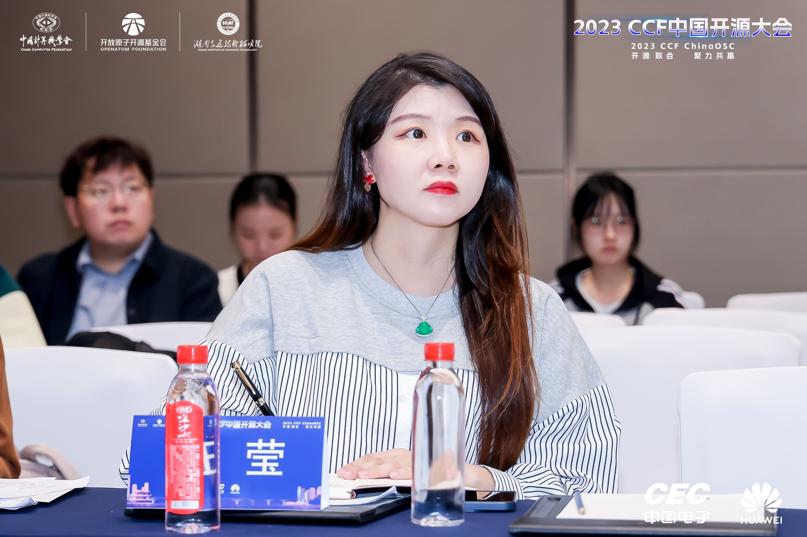

Ying Wang (王莹)
Associate professor (Doctoral Advisor)
Software College
Northeastern University (China)
Office: Information Building B406 or B425E
Address: No.195 Chuangxin Road, Hunnan District, Shenyang, China
Email: wangying[-AT-]swc.neu.edu.cn
I am an associate professor in Faculty of Software College, Northeastern University (NEU), China. My research focuses on securing software supply chain, governing software ecosystems (Maven, PyPI Cargo, npm, NuGet, etc.), dependency management, LLM4SE, and software refactoring. I obtained my PhD from Northeastern University, under the supervision of Prof. Zhiliang Zhu and Hai Yu. During 2021/03-2021/03-06, I was supported by Microsoft Research Asia StarTrack Program, as a visiting scholar under the supervision of Prof. Jianguang Lou. During 2022/05-2023/05, I was a Post-doctoral Fellow at the Hong Kong University of Science and Technology (HKUST) in the Castle group, under the supervision of Prof. Shing-Chi Cheung.
Working Experience
- 2019/02-until now, associate professor, Software College, Northeastern University
- 2019/08-2019/09, visiting scholar, CSE Department of SUSTech
- 2021/03-2021/06, visiting scholar (Microsoft Research Asia StarTrack Program Visiting Scholar), MSRA, Advisor: Prof. Jianguang Lou
- 2022/05-2023/05, Post-doctoral Fellow, CSE Department of HKUST, Advisor: Prof. Shing-Chi Cheung
Education
- 2013/09-2019/01, Software College, Northeastern University
Ph.D., Software Engineering, Supervisors: Prof. Zhiliang Zhu and Hai Yu
PhD Thesis: Network Modeling, Quality Measurement and Assurance of Software System - 2018/01-2018/04, research assistant, CSE Department of HKUST, Advisor: Prof. Shing-Chi Cheung
- 2018/08-2018/09, research assistant, CSE Department of SUSTech
Personal profile
Dr. Wang Ying conducted research in the field of software engineering since 2013 and has developed a solid theoretical basis and technical prototype in dependency bug diagnosis and repair techniques, software testing, and software reliability analysis methods in various programming languages, including Java, C#, Python, Go, Android, Rust, etc. Over the past five years, she has published 27 papers in top-tier academic journals and conferences in the field of software engineering, such as TSE, ICSE, ESEC/FSE, ASE, and ISSTA. Among these publications, she has served as the first author or corresponding author for 20 papers published in top-tier journals and conferences. She has been awarded two ACM SIGSOFT Distinguished Paper Awards. The software dependency bug diagnosis tools developed by her have detected over 1200 unknown software bugs or vulnerabilities in the open-source community. Several of her techniques have been successfully applied in top-tier companies such as Huawei, Loongson, WeBank, and Microsoft.
- Empirical Research on Software Dependency Defects: Our research group investigated and analyzed 1,462 real defect cases, with the findings on dependency management defects in the Go language ecosystem published in the International Conference on Software Engineering [ICSE 2021]. This is the first research paper in the academic community of software engineering that focuses on dependency defects in the Go language, and it was honored with the ACM SIGSOFT Distinguished Paper Award. In order to benefit more software developers with the practical survey results on Golang's dependency management defects, we have rewritten the content of the paper into a technical blog post titled "A survey on Golang's dependency management modes (GOPATH and Go Modules): status quo, problems and challenges." The blog post has been included in the official Google Go Language Wiki series of technical reports available at (https://github.com/golang/go/wiki/ExperienceReports#modules), where most of the articles are contributed by developers from the official Google Go language team.
-
Software Dependency Conflict Detection and Resolution Techniques: Dependency conflict issues refer to software defects caused by conflicts between multiple versions of the same software component. These issues plague nearly 90% of open-source software and industrial software products. Our research group are scholars in the field of software engineering who were among the first to propose solutions for the persistent "dependency conflict problem" in the open-source ecosystem. Based on different sources of open-source software repositories, version management approaches (common rules and minor semantic version control rules in different languages), dependency configuration patterns (migration behaviors exist in the C# community), and version conflict resolution rules, accurate modeling of software dependency conflict defects in different programming language communities can be achieved. The diagnostic tool for Java software dependency conflict issues, called Decca, has been developed into an online platform: http://www.watchman-pypi.com/decca. Decca has detected and reported 128 real defect issues for software projects in the Java open-source community. The diagnostic platform for Java dependency conflict issues won the second prize in the CCF ChinaSOFT Software Prototype Competition in 2020. Several high-quality academic achievements have been produced in this research direction, and the technology has been applied in flagship products of companies such as Huawei, with support from the National Natural Science Foundation of China (Youth Fund Project) and Huawei's collaboration project.
For the .NET language, there is a diagnostic tool for software dependency conflicts called NuFix [ICSE 2022], which can handle large-scale and complex software. It can automatically generate repair patches for such software within 10 seconds. Currently, NuFix (http://www.nufix-dependency-maze.com/) has solved automatic repair issues for more than 200 open-source software projects, including Dropbox, a product-level project. NuFix has been integrated into Microsoft's flagship product, the Visual Studio platform. It can automatically infer the optimal combination of component versions for software projects, revolutionizing the software package upgrade strategy for developers. It will save configuration costs for over 340,000 .NET developers using the Visual Studio platform. The official release address of the tool is: https://marketplace.visualstudio.com/items?itemName=vsext.NuGetSolver. - Real-time monitoring technology for software ecosystem evolution: Our research group developed a technology for capturing the topological information of software dependencies and monitoring software library updates in the software ecosystems of multiple programming languages since 2020. The modeling and monitoring technology for the 2.3 million software dependencies in the Python component central repository has been released as an online service platform: http://www.watchman-pypi.com/. The Watchman tool's website has received 35,226 valid visits (as of December 2023) and has generated online diagnostic reports for dependency conflicts for a total of 36,870 Python software projects. In September 2020, the tool was featured on the Morning Paper, a highly influential academic paper recommendation website in the field of computer science: https://blog.acolyer.org/2020/09/21/watchman/. In October 2020, the tool received a strong recommendation from Pycoders, the official Python technical magazine: https://pycoders.com/issues/441.
- Bloated Dependency Resolution Technology Based on Precise Static Analysis: Since 2021, our research group developed efficient and precise static analysis techniques and applied them to eliminate redundant dependencies in software projects. This technology targets software projects developed using popular frameworks such as Java EE Servlets, Java Beans, Apache Struts, Spring, Spring Boot, and Tomcat. It performs efficient reflection analysis, handling complex scenarios involving reflection APIs encapsulated by popular frameworks and reflection invocations related to configuration files. The accuracy of this technology is nearly 30% higher than existing techniques. The related achievements were published at ICSE 2024 and received support from a collaborative project with Huawei. The research team was honored with the "Outstanding Partner of the Year for Technical Collaboration Award" from Huawei Cloud Computing Technology Co., Ltd. in 2023.
- Analysis of Vulnerability Propagation Impact across Programming Languages: Our research group proposed the first approach to analyzing the propagation impact of vulnerabilities across programming language ecosystems. The proposed technology can capture the propagation impact of C language software components carrying vulnerabilities in Java and Python software ecosystems. They have developed a tool called Insight: http://insight-clv-detection.com/homepage, which generates comprehensive software bill of materials for mixed programming language software, addressing the problem of unclear component composition. Additionally, combining precise programming language analysis techniques, they analyze the reachability of security vulnerabilities across diverse cross-programming language interfaces. The research results have been published in top-tier journals and conferences in the field of software engineering. They were also awarded the Third Prize in the CCF ChinaSOFT Software Prototype Competition and the technology has been incorporated into Huawei's software composition analysis products.
- Performance Defect Detection in Deep Learning Software Libraries: Machine learning pipelines utilize APIs provided by AI software libraries (libraries related to machine learning and deep learning) to implement workflow for learning tasks. However, different combinations of AI software library versions can lead to significant performance differences in pipelines. The research group investigates the prevalence, impact, and root causes of the performance effects caused by different combinations of AI software library versions on learning tasks. To conduct scalable in-depth analysis, they have developed a tool called Piecer. It automatically generates a set of pipeline variants by changing the combinations of different versions of AI software libraries and detects inconsistencies in their performance. The related findings were published at ESEC/FSE 2023 and received the ACM SIGSOFT Distinguished Paper Award. Currently, the tool has identified 350 real performance issues in open-source communities, including TensorFlow.
- Survey of Software Dependency Defect Detection and Remediation: The research group focuses on the open-source software library ecosystem and has collected 348 academic papers published in high-impact journals and conferences in the field of software engineering from 2001 to 2023. They have conducted a comprehensive review of research work on the governance of open-source software library ecosystems [Journal of Software'23]. The review discusses various aspects of open-source software library ecosystem modeling and analysis, evolution and maintenance, quality assurance, and management. It summarizes the current state of research, identifies existing problems, challenges, and trends in the field. This paper is the most extensive and comprehensive review study in the field, covering a wide range of literature spanning many years.
Book Chapters
- [2021-2022 China Computer Science and Technology Development Report] 《Governance Techniques for Open Source Software Ecosystems: Current Status, Issues, and Prospects》, 1-76 pages (60,000 words). CCF Open Source Development Committee.
Authors：Ying Wang、Yuxia Zhang、Lin Shi、Tao Wang、Minghui Zhou. (Mechanical Publishing House, Electronic Publishing, Edited by China Computer Society) [Reference]
Publications
- [ICSE’24] Xiaohu Song, Ying Wang*, Xiao Cheng, Guangtai Liang, Qianxiang Wang, and Zhiliang Zhu. Efficiently Trimming the Fat: Streamlining Software Dependencies with Java Reflection and Dependency Analysis, ICSE 2024, Article No. 103: 1-12. (Corresponding Author). (CCF-A) CCF ChinaSOFT Software Prototype Competition, Third Prize, 2023. [Artifact] Slimming tool helps developers reliably remove unnecessary dependencies. Slimming has been integrated into Huawei's commercial tools.
- [Journal of Software’23] Ying Wang, Yingxin Wu, Tian Gao, Ziying Chen, Chang Xu, Hai Yu*, Shing-Chi Cheung*. A Review of Research on Governance Techniques for Open Source Software Libraries: Twenty Years of Progress. Journal of Software. 2023, 1-45, 2024,35(2):629-674. (CCF-A)
- [ASE’23] Tsz-On Li, Wenxi Zong, Yibo Wang, Haoye Tian, Ying Wang*, Shing-Chi Cheung*, Jeff Kramer. Nuances are the Key: Unlocking ChatGPT to Find Failure-Inducing Tests with Differential Prompting [C], ASE 2023, 14-26. (Corresponding Author). (CCF-A) [Artifact] Differential Prompting tool help developers automatically generate failure-inducing tests leveraging ChatGPT.
- [ESEC/FSE’23] Yibo Wang, Ying Wang*, Tingwei Zhang, Yue Yu, Shing-Chi Cheung, Hai Yu, and Zhiliang Zhu. Can Machine Learning Pipelines Be Better Configured [C], ESEC/FSE 2023, November 2023, Pages 463–475. (Corresponding Author). (CCF-A) ACM SIGSOFT Distinguished Paper Award. [Artifact] Piecer tool helps developers optimaize version combinations of deep learning libraries to obtain better performance of AI models.
- [ISSTA’23] Linlin Li, Ruifeng Wang, Xian Zhan, Ying Wang, Cuiyun Gao, Sinan Wang, Yepang Liu*. What You See Is What You Get? It Is Not the Case! Detecting Misleading Icons for Mobile Applications [C], ISSTA 2023, July 2023, Pages 538–550. (CCF-A)
- [TSE’23] Ying Wang, Peng Sun, Lin Pei, Yue Yu*, Chang Xu, Shing-Chi Cheung, Hai Yu, and Zhiliang Zhu. PLUMBER: Boosting the Propagation of Vulnerability Fixes in the npm Ecosystem [J], IEEE Transactions on Software Engineering, Volume: 49, Issue: 5, 01 May 2023. (CCF-A) [Artifact] Plumber: it helps boost the propagation of vulnerability fixes in the npm ecosystem.
- [TSE’23] Ying Wang, Yibo Wang, Sinan Wang, Yepang Liu*, Chang Xu, Shing-Chi Cheung, Hai Yu, and Zhiliang Zhu. Runtime Permission Issues in Android Apps: Taxonomy, Practices, and Ways Forward [J], IEEE Transactions on Software Engineering, 2023, 49(1), 185-210. (CCF-A)
- [ASE’22] Meiqiu Xu, Ying Wang*, Shing-Chi Cheung, Hai Yu, and Zhiliang Zhu. Insight: Exploring Cross Ecosystem Vulnerability Impacts [C], ASE 2022, Article No. 58, Pages 1–13. (Corresponding Author) (Acceptance ratio 21.8%=116/531) (CCF-A) CCF ChinaSOFT Software Prototype Competition, Third Prize, 2023. [Artifact] Insight: it helps catpure the vulnerability propagation across different programming language ecosystems.
- [TSE’22] Zhixing Li, Yue Yu, Tao Wang, Yan Lei, Ying Wang, Huaimin Wang. To Follow or Not to Follow: Understanding Issue/Pull-Request Templates on GitHub [J], IEEE Transactions on Software Engineering, To appear. (CCF-A)
- [SecDev’22] Md Mahir Asef Kabir, Ying Wang, Danfeng Yao, and Na Meng. How Do Developers Follow Security-Relevant Best Practices When Using NPM Packages? [C], 2022 IEEE Secure Development Conference (SecDev 2022): 77-83.
- [ICSE’22] Zhenming Li, Ying Wang*, Zeqi Lin*, Shing-Chi Cheung, Jianguang Lou. Nufix: Escape From NuGet Dependency Maze [C], ICSE 2022: 1545-1557. (Corresponding Author) (Acceptance ratio 26.0%=197/751) (CCF-A) [Artifact] NuFix: it helps .NET developers combat dependency hell issues. Nufix has been integrated in Visual Studio 2022 (amd64) by Microsoft. Wecome to install NuGetSolver tool.
- [ICSE’22] Sinan Wang, Yibo Wang, Xian Zhan, Ying Wang, Yepang Liu*, Xiapu Luo, Shing-Chi Cheung. Evolution-Aware Runtime Permission Misuse Detection for Android Apps [C], ICSE 2022: 125–137. (Acceptance ratio 26.0%=197/751) (CCF-A)
- [TSE’22] Ying Wang, Rongxin Wu, Chao Wang, Ming Wen, Yepang Liu, Shing-Chi Cheung, Hai Yu*, Chang Xu and Zhiliang Zhu. Will Dependency Conflicts Affect My Program's Semantics? [J], IEEE Transactions on Software Engineering, 2022, 48(7), 2295-2316. (CCF-A)
- [SANER’21] Sinan Wang, Ming Wen, Yepang Liu*, Ying Wang, Rongxin Wu. Understanding and Facilitating the Co-Evolution of Production and Test Code [C], SANER 2021: 272-283. (Acceptance ratio 25%=42/165) (CCF-B)
- [ICSE’21] Ying Wang, Liang Qiao, Chang Xu*, Yepang Liu, Shing-Chi Cheung, Na Meng, Hai Yu and Zhiliang Zhu. Hero: On the Chaos When PATH Meets Modules [C], ICSE 2021: 99-111. (Acceptance ratio 22.4%=138/615) (CCF-A) ACM SIGSOFT Distinguished Paper Award. [Artifact] Hero: it diagnoses dependency management issues for Golang ecosystem.
- [ICSE’20] Ying Wang, Ming Wen*, Yepang Liu*, Yibo Wang, Zhenming Li, Chao Wang, Shing-Chi Cheung, Hai Yu, Chang Xu and Zhiliang Zhu. Watchman: Monitoring Dependency Conflicts for Python Library Ecosystem [C], ICSE 2020: 125-135. (Acceptance ratio 20.9%=129/617) (CCF-A) [Artifact] Watchman: it performs a holistic analysis from the perspective of entire PyPI ecosystem to continuously monitor dependency conflicts for millions of Python libraries. Watchman was recommended by The Morning Paper on Sep 21, 2020, and Python Weekly Magazine(Pycoders) on Issue 441.
- [ICSE’19] Ying Wang, Ming Wen, Rongxin Wu*, Zhenwei Liu, Shin Hwei Tan, Zhiliang Zhu, Hai Yu and Shing-Chi Cheung*. Can I Have a Stack Trace to Examine the Dependency Conflict Issue?[C], ICSE 2019: 572-583. (Acceptance ratio 20.6%=109/529) (CCF-A)
- [TSE’18] Ying Wang, Hai Yu*, Zhiliang Zhu, Wei Zhang, Yuli
Zhao. Automatic Software Refactoring via Weighted Clustering
in Method-level Networks[J], IEEE Transactions on Software Engineering, 2018, 44(3), 202-236. (CCF-A)
“Journal first”invited talk at ESEC/FSE 2017, 2017.09, Germany. (CCF-A) - [ESEC/FSE’18] Ying Wang, Ming Wen, Zhenwei Liu, Rongxin Wu,
Rui Wang, Bo Yang, Hai Yu, Zhiliang Zhu* and Shing-Chi Cheung*.
Do the Dependency Conflicts in My Project Matter?[C], ESEC/FSE 2018: 319-330. (Acceptance ratio 18.6%=55/295)
(CCF-A)
CCF ChinaSOFT Software Prototype Competition, Second Prize, 2020. - [JSS’18] Ying Wang, Hai Yu*, Zhiliang Zhu. Using Risk Analysis to Prioritize Test Cases[J], Journal of Systems and Software. 2018, 139, 14-31. (CCF-B)
- [TCAS2’18] Ying Wang, Zhiliang Zhu*, Hai Yu. Risk Analysis on Multi-granular Network for Software Integration Testing[J], IEEE Transactions on Circuits and Systems II: Express Briefs, 2018, 65(8): 1059-1063.
- [FITEE’22] Fanyi Meng, Ying Wang, Hai Yu* and Zhiliang Zhu. Devising optimal integration test orders using cost-benefit analysis [J], Frontiers of Information Technology & Electronic Engineering, 23, pages 692–714 (2022). (Journal of the Chinese Academy of Engineering, CCF-C)
- [Chinese Journal of Computers’19] Hai Yu, Yue Yang, Ying Wang*, Wei Zhang, Zhiliang Zhu. Prioritization of Regression Test Cases Based on Risk Analysis. Chinese Journal of Computers. 2019, 42(10): 2127-2144. (CCF-A)
- [Journal of Computer Research and Development’16] Ying Wang, Hai Yu, Zhiliang Zhu. Class-Level Integration Test Sequence Generation Method based on Node Importance. Journal of Computer Research and Development, 2016, 53(3): 517-530. (CCF-A)
- [Computer Science’20] Fanyi Meng, Ying Wang, Hai Yu*, Zhiliang Zhu. Refactoring Techniques for Complex Software Systems: Current Status, Issues, and Prospects. Computer Science. 2020, 47(12): 1-10. Cover Paper, (CCF-B)
- [Journal of Software’22] Hai Yu, Ying Wang*, Meiqiu Xu, Bo Yang, Chang Xu, Zhiliang Zhu. Complexity Measurement Methods and Potential Applications of Software Library Dependency Graphs. Journal of Software. 2022, 1-23, To appear. (CCF-A)
Patents
- Yu Hai, Ying Wang, Zhiliang Zhu, Yuli Zhao, Wei Zhang. "A Method of integration testing for object-oriented software", Patent No.: 201610021303.0, Granted.
- Ying Wang, Yang Yue, Yu Hai, Zhiliang Zhu, Wei Zhang. "A Method for Automated Refactoring of Object-Oriented Software", Patent No.: 201610843591.8, Granted.
- Zhenwei Liu, Rui Wang, Bo Yang, Ying Wang, Hai Yu, Zhiliang Zhu. "A Method for Evaluating Severity levels of Dependency Conflicts in Maven Environment", Patent No.: CN201810891476.7, Published.
Software copyrights
- Yu Hai, Ying Wang, Hongjian Yin, Zhiliang Zhu, Wei Zhang, Yuli Zhao. "Automated Software Refactoring System".
- Zhiliang Zhu, Ying Wang, Hai Yu, Yue Yang, Yuli Zhao, Wei Zhang. "Software Refactoring and Measurement Visualization System".
- Bo Yang, Liu Zhenwei, Rui Wang, Ying Wang, Hai Yu, Zhiliang Zhu. "Defect Data Collection and Measurement Analysis System for Interactions between Open-source Software and Third-party Libraries".
Projects
- AI Agent for Collaborative Software Development across Analysis Toolchains. 2024 Tencent Foundation Platform Technology Special Research Program. Project Leader. 2024/04-2025/04.
- Research on Trusted Guarantee Technology for Software Supply Chain in the Open Source Ecosystem of Ubiquitous Operating Systems. Fundamental Research Funds for the Central Universities. Project Leader. 2022/01-2023/12.
- Research on Trusted Guarantee Technology for Software Supply Chain in the Open Source Ecosystem of Ubiquitous Operating Systems. National Natural Science Foundation of China. Project Leader. 2022/01-2023/12.
- Research on Evolution Mechanism and Replacement Techniques for Software Component Dependencies in Open Ecosystems. The Open Fund of the State Key Laboratory for Novel Software Technology at Nanjing University. Project Leader. 2021/01-2023/12.
- Research and Practice on Reforming the Content System of Financial Technology Courses. Educational Reform Project of Liaoning Province. Project Leader. 2022/01-2023/12.
- Research on Intelligent Aggregation Theory for Multi-source Heterogeneous Software Systems. Disciplinary Development Project of the Software College at Northeastern University. Project Leader. 2021/01-2022/12.
- Research on Replacability of Component Dependencies in Mixed-source Software. National Natural Science Foundation of China (Youth Fund). Project Leader. 2020/01-2022/12.
- Research on Evolution Mechanism and Automated Upgrade Techniques for Component Dependencies in Open Source Communities. Fundamental Research Funds for the Central Universities. Project Leader. 2020/01-2021/12.
- Research on Security Replacement Mechanisms for Third-party Software in Open Source Communities. Shenyang Young and Middle-aged Science and Technology Innovation Talent Program. Project Leader. 2020/01-2022/12.
- Research on Modeling, Quality Measurement, and Optimization Mechanisms of Networked Software Systems. Startup Funding for Introduced Talents at Northeastern University. Project Leader. 2019/03-2019/12.
Awards
- Microsoft Research Asia StarTrack Program Visiting Scholar, 2020, [Reference]
- Outstanding Ph.D. Thesis Nomination Award from China Computer Federation (CCF), 2020, [Reference]
- Outstanding Ph.D. Thesis Award from Liaoning Province, 2020, [Reference]
- Outstanding Ph.D. Thesis Award from Northeastern University, 2020, [Reference]
- ACM SIGSOFT Distinguished Paper Award, ICSE 2021, [Reference]
- Shenyang Young and Middle-aged Science and Technology Innovation Talent Program, 2020
- LOL: Diagnosis Platform for Mixed Software Dependency Conflict Issues, Second Prize in CCF ChinaSOFT Software Prototype Competition, 2020, [Reference]
- "Outstanding Youth Worker" of Northeastern University, 2022, [Reference]
- ACM SIGSOFT Distinguished Paper Award, ESEC/FSE 2023, [Reference]
- INSIGHT: Hybrid Language Software Component Analysis Technology, Third Prize in CCF ChinaSOFT Software Prototype Competition, 2023, [Reference]
- SLIMMING: Resolution Technology for Redundant Dependencies in Java Software, Third Prize in CCF ChinaSOFT Software Prototype Competition, 2023, [Reference]
Talks
- Devising Optimal Integration Test Orders Using Complex Network Analysis, IWCFTA, 2016.12
- Weighted Clustering in Method Level Networks to Support Automated Software Remodularization, IWCFTA, 2017.08
- Automatic Software Refactoring via Weighted Clustering in Method-level Networks, "Journal first" invited talk at ESEC/FSE 2017 (CCF A), 2017.09
- Automatic Software Refactoring via Weighted Clustering in Method-level Networks, Department of Computer Science and Engineering, Hong Kong University of Science and Technology, Host: Shing-Chi Cheung, 2017.10
- Automatic Software Refactoring via Weighted Clustering in Method-level Networks, Department of Computer Science and Engineering, Southern University of Science and Technology, Host: Liu Yepang, 2018.03
- Analysis and Detection of Dependency Conflict Issues in Mixed-source Software, School of Software, Fudan University, Host: Chen Bihuan, 2018.12
- Analysis and Detection of Dependency Conflict Issues in Mixed-source Software, Huawei Technologies Co., Ltd., Host: Ou Jianshen, 2019.01
- Analysis and Detection of Dependency Conflict Issues in Mixed-source Software, NASAC2018 Excellent Doctoral Forum Keynote Speaker, 2019.11
- How to Plan Research Time? - Talking about the Ph.D. Research Journey, School of Software, Northeastern University, 2020.03
- Who Moved My Cheese? - Dependency and Replacement Analysis in Mixed-source Software Ecosystem, Frontiers of Software Engineering Progress Report, China Computer Federation, Hosts: Dong Wei, Bu Lei, 2020.07 [Poster]
- Analysis and Detection of Dependency Conflict Issues in Mixed-source Software, Nanjing University, Host: Xu Chang, 2020.09
- Software Engineering Research Tips and Tricks, Yangzhou University, Host: Sun Xiaobing, 2020.11
- Analysis and Governance Techniques of Third-party Dependencies in Open Ecosystem, University of Macau, Host: Zhang Tao, 2020.12
- Analysis and Governance Techniques of Third-party Dependencies in Open Ecosystem, Software and Intelligence Seminar (Dalian University of Technology & Beijing Institute of Technology), Host: Jiang He, 2020.12
- Analysis and Governance Techniques of Third-party Dependencies in Open Ecosystem, Huawei Technologies Co., Ltd., Host: Liang Guangtai, 2020.12
- Comic-style Research Dreams, Being the "Wonder Woman" of the Open Source World, Ada Workshop 2021, Hosts: China Computer Federation, Women in Computing Committee of China Computer Federation, Microsoft Research Asia, 2021.03
- Dependency Defects and Bad Smells in Software Components in Open Ecosystems, Special Invited Lecture at China Computer Federation's Visit to Hebei University of Science and Technology, Host: Zhang Yang, 2021.05
- Escaping the Dependency Maze of NuGet, Microsoft Research Asia All-Staff Meeting, Host: Microsoft Research Asia, 2021.06
- Comic-style Research Dreams, Being the "Wonder Woman" of the Open Source World, Beauty of Computation - Ph.D. Forum Special Invited Lecture, Hosts: Microsoft Research Asia, China Computer Federation, 2021.06
- Governance Techniques for Dependency Defects and Bad Smells in Software Components in Open Ecosystems, 4th Software Comprehensive Testing Technology Forum, Host: Li Bixin, 2021.06
- The Chaos and Order of Open Source Software Evolution, China Digital Service Conference, Wisdom Forum, Host: Xia Xin, 2021.11
- Chaos and Order in the Evolution of Open Source Software, Opportunities and Challenges Forum at the China National Computer Conference (CNCC), Invited by: Wang Qianxiang, Zhou Minghui, 2021.12
- Hero: On the Chaos When PATH Meets Modules, China Software Conference (ChinaSOFT), Top Conference and Journal Forum, Invited by: Liu Hui, Zhang Yuxia, 2021.12
- Chaos and Order in the Evolution of Open Source Software, School of Computer Science, National University of Defense Technology, Invited by: Li Shanshan, 2022.6
- "Prevention and Control" of Language Borderline: Governance of Security Vulnerability Propagation Across Programming Language Ecosystems, Fudan University, Software Supply Chain Series Academic Report, Invited by: Huang Kaifeng, Peng Xin, 2022.10 [Poster]
- Survey on Research Progress of Technical Governance in Open Source Software Supply Chain: 20 Years of Advancement 2001-2022, China Software Conference (ChinaSOFT), Forum on Theory, Technology, and Open Source Ecosystem Construction of Ubiquitous Operating Systems, Invited by: Guo Yao, Sun Hailong, Zheng Wei, 2022.11
- "Prevention and Control" of Language Borderline: Governance of Security Vulnerability Propagation Across Programming Language Ecosystems, China Software Conference (ChinaSOFT), Open Source Software Forum, Invited by: Zhang Yuxia, Zhou Minghui, 2022.11
- How to Conduct Systematic Research, Department of Computer Science and Engineering, Hong Kong University of Science and Technology, Castle Research Group, Invited by: Shing-Chi Cheung, 2022.12
- Software Supply Chain Security Challenges in the AIGC Era, School of Computer Science, National University of Defense Technology, Invited by: Li Shanshan, 2023.10
- Software Supply Chain Security Challenges in the AIGC Era, Big Model Security Risk Control Forum at the China National Computer Conference (CNCC), Invited by: Liang Guangtai, 2023.10
Teaching Duties
- 2019 (Fall) Lecturer: Software Quality Assurance and Testing
- 2020 (Fall) Lecturer: Software Quality Assurance and Testing
- 2021 (Fall) Lecturer: Software Quality Assurance and Testing
- 2023 (Fall) Lecturer: Open Source Software Build Techniques
Academic services
- Program Committee, ICSE 2025 Research Track, 2025 (CCF A)
- Program Committee, ASE 2025 Research Track, 2025 (CCF A)
- Program Committee, ASE 2024 Research Track, 2024 (CCF A)
- Chair, ChinaSoft 2024 Women's Forum on Software Engineering, 2024
- Chair, CCF ChinaOSC 2023 Forum on Measuring the Health of Open Source Ecosystems, 2023
- Chair, ChinaSoft 2023 Women's Forum on Software Engineering, 2023
- Program Committee, ASE 2023 Research Track, 2022 (CCF A)
- Organizer&Guest Editor, Special Issue on SANER 2023 Tool Track, Science of Computer Programming (SCP), 2024 (CCF B)
- Program Committee, ASE 2022 Research Track, 2022 (CCF A)
- Co-Chair, SANER 2022 Tool Demo Track, 2023 (CCF B)
- Program Committee, ICSE 2023 NIER Track, 2023 (CCF A)
- Program Committee, ESE/FSE 2021 SRC Track, 2021 (CCF A)
- Program Committee, ChinaSoft 2021 Forum on Software Data Intelligence Analysis, 2021
- Program Committee, ICSE 2022 NIER Track, 2022 (CCF A)
- Program Committee, DSC 2021, 2021
- Program Committee, ISSTA 2020 Tool Demonstration Track, 2020 (CCF A)
- Program Committee, APSEC 2020, 2020 (CCF C)
- Program Committee, SAC 2020, 2020
- Program Committee, Quality Assurance Techniques for Non-deterministic Software Systems 2020, Journal Of Software, 2020 (CCF A)
- Program Committee, the 2nd International Workshop on Intelligent Bug Fixing (IBF), 2020
- Section Chair of the 12th International Workshop on Complex-systems for Future Technologies and Applications (IWCFTA 2019), 2019
- Reviewer of Journal of Software: Evolution and Process, 2022
- Reviewer of Empirical Software Engineering (EMSE), 2022
- Reviewer of Journal Of Software, 2022
- Reviewer of IEEE Transactions on Reliability (TR), 2022
- Reviewer of IEEE Transactions on Software Engineering (TSE), 2022
- Reviewer of Journal of Software: Evolution and Process, 2021
- Reviewer of Software Testing, Verification and Reliability, 2021
- Reviewer of IET Software, 2021
- Reviewer of ICSE 2021, 2021
- Reviewer of Empirical Software Engineering (EMSE), 2021
- Reviewer of IEEE Transactions on Software Engineering (TSE), 2021
- Reviewer of Frontiers of Computer Science (FCS), 2020
- Reviewer of Journal of Journal of Systems and Software (JSS), 2020
- Reviewer of ACM Computing Surveys (CSUR), 2020
- Reviewer of SCIENCE CHINA Information Sciences, 2020
- Reviewer of Frontiers of Computer Science (FCS), 2019
- Reviewer of Journal of Computer Science and Technology (JCST), 2019
- Co-reviewer of the IEEE Transactions on Internet Technology (TOIT), 2018
- Co-reviewer of IEEE Transaction on Reliability (TR), 2017
- Co-reviewer of the Journal of Systems and Software (JSS), 2017
My postgraduate students
-
Present
- Gege Yuan (Undergraduate; Associate Mentor; dependency management for Java)
- Ziying Chen (Undergraduate; Associate Mentor; dependency management for C)
- Chenguang Wang (MSc; Supervisor; Software ecosystem, dependency management for C)
- Shujing Wang (MSc; Supervisor; Software ecosystem, dependency management for C)
- Wenxi Zong (MSc; Supervisor; Software ecosystem, dependency management for C)
- Dunwei Du (MSc; Associate Mentor; Software ecosystem, dependency management for C)
- Sixuan Wang (MSc; Associate Mentor; Software ecosystem, dependency management for C)
- Fanyi Meng (PhD; Associate Mentor; Software refactoring)
- Meiqiu Xu (PhD; Associate Mentor; Graph-based neural networks)
- Xiaohu Song (PhD; Associate Supervisor; Software ecosystem)
- Yibo Wang (王毅博) (PhD; Associate Supervisor; Software ecosystem, dependency management, software testing)
- Peng Sun (MSc; Associate Supervisor; Software ecosystem, dependency management for Python)
- Wei Kong (MSc; Associate Supervisor; Software ecosystem, dependency management for Python)
- Ruijie Guo (MSc; Associate Supervisor; Software ecosystem, dependency management for Java)
- Yan Yuan (MSc; Associate Supervisor; Software ecosystem, dependency management for Go)
- Wei Kong (MSc; Associate Supervisor; Software ecosystem, dependency management for Python)
- Bo Zhou (MSc; Supervisor; Software ecosystem, dependency management for .NET)
- Tian Gao (MSc; Supervisor; Software ecosystem, dependency management)
- Yaxi Zhang (MSc; Supervisor; Software ecosystem, dependency management)
- Ziying Chen (MSc; Supervisor; Software ecosystem, dependency management)
- Jialun Wang (MSc; Associate Supervisor; Software ecosystem, dependency management for C)
- Wei Yang (MSc; Associate Supervisor; Software ecosystem, dependency management for C, Vulnerabilities)
- Jiaye Hu (MSc; Associate Supervisor; Software ecosystem, dependency management for C)
- Chao Zhao (MSc; Supervisor; Software ecosystem, dependency management for C)
- Tingwei Zhang (MSc; Supervisor; Software ecosystem, dependency management, software testing)
- Yingxin Wu (MSc; Supervisor; Software ecosystem, dependency management, software testing)
- Jialun Wang (MSc; Associate Supervisor; Software ecosystem, dependency management, software testing)
- Peng Sun (MSc; Associate Supervisor; Software ecosystem, dependency management, software testing)
- Penghui Zhu (MSc; Associate Supervisor; Software ecosystem, dependency management for Rust, software testing)
- Jiajia Zhang (MSc; Associate Supervisor; Software ecosystem, dependency management, software testing)
- Xiaoting Cai (MSc; Associate Supervisor; Software ecosystem, dependency management, software testing)
-
Past
- Zhenming Li (MSc; Supervisor; Software ecosystem, dependency management, software testing, Joining Microsoft)
- Xiuqi Wang (MSc; Associate Supervisor; Software ecosystem, dependency management, software testing, Joining Tencent)
- Ruifeng Wang (MSc; Associate Supervisor; Software engineering for AI models, Joining Tencent)
- Junyan Sun (MSc; Associate Supervisor; Software ecosystem, dependency management, software testing, Joining Oppo)
- Lin Pei (MSc; Associate Supervisor; Software ecosystem, software engineering big data, Joining Jiangsu Telecom)
- Chao Wang (MSc; Associate Supervisor; Software ecosystem, dependency management, software testing; Xiamen University PhD)
- Yibo Wang (王一博) (MSc; Associate Supervisor; Software ecosystem, dependency management, software testing; Joining TikTok)
- Liang Qiao (MSc; Associate Supervisor; Software ecosystem, dependency management, software testing; Joining CMCC)
- Saisai Zhang (MSc; Associate Supervisor; Software ecosystem, dependency management, software testing; Joining Ctrip)
- Jialin Li (MSc; Associate Supervisor; Software ecosystem, dependency management, software testing; Joining Tencent(Special Offer))
- Gan Zhan (MSc; Associate Mentor; Software engineering for AI models; Ritsumeikan University PhD)
- Zhenwei Liu (MSc; Associate Mentor; Software ecosystem, dependency management, software testing; Joining Meituan(Special Offer))
- Bo Yang (MSc; Associate Mentor; Software ecosystem, dependency management, third-party libraries; Joining Alibaba)
- Rui Wang (MSc; Associate Mentor; Software refactoring; Joining Meituan)
- Yue Yang (MSc; Associate Mentor; Software refactoring; Joining Financial Technology Department, Industrial and Commercial Bank of China (Liaoning))
- Hongjian Yin (MSc; Associate Mentor; Complex network theory; Joining Alibaba(Special Offer))